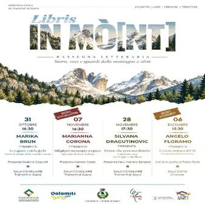

da sab 31 ott a dom 6 dic
Libris in Mò[nt]
𝑹𝒂𝒔𝒔𝒆𝒈𝒏𝒂 𝒍𝒆𝒕𝒕𝒆𝒓𝒂𝒓𝒊𝒂: 𝑺𝒕𝒐𝒓𝒊𝒆, 𝒗𝒐𝒄𝒊 𝒆 𝒔𝒈𝒖𝒂𝒓𝒅𝒊 𝒅𝒂𝒍𝒍𝒆 𝒎𝒐𝒏𝒕𝒂𝒈𝒏𝒆 𝒆 𝒐𝒍𝒕𝒓𝒆. Ci sono storie che meritano di essere riscoperte, voci che attraversano il tempo e vite che ci aiutano a comprendere il nostro passato. 𝐋𝐢𝐛𝐫𝐢𝐬 𝐢𝐧 𝐌o[nt] propone quattro incontri con autrici e autori, tra memorie…
 Indicazioni
Indicazioni
- Costi e prenotazioni
- Costo non indicato · Prenotazione non indicata
- Programma
- Programma da verificare. Apri la fonte ufficiale per orari e possibili aggiornamenti.
- In caso di maltempo
- Nessuna indicazione specifica pubblicata.
- Note
- Acquisito automaticamente dalla fonte.
L’EVENTO
Descrizione completa
𝑹𝒂𝒔𝒔𝒆𝒈𝒏𝒂 𝒍𝒆𝒕𝒕𝒆𝒓𝒂𝒓𝒊𝒂: 𝑺𝒕𝒐𝒓𝒊𝒆, 𝒗𝒐𝒄𝒊 𝒆 𝒔𝒈𝒖𝒂𝒓𝒅𝒊 𝒅𝒂𝒍𝒍𝒆 𝒎𝒐𝒏𝒕𝒂𝒈𝒏𝒆 𝒆 𝒐𝒍𝒕𝒓𝒆.
Ci sono storie che meritano di essere riscoperte, voci che attraversano il tempo e vite che ci aiutano a comprendere il nostro passato.
𝐋𝐢𝐛𝐫𝐢𝐬 𝐢𝐧 𝐌 o[nt] propone quattro incontri con autrici e autori, tra memorie della Grande Guerra, diari d’alta quota, vicende di coraggio e il racconto del terremoto del ‘76.
𝟑𝟏 𝐨𝐭𝐭𝐨𝐛𝐫𝐞 - ore 16:30
𝐌𝐚𝐫𝐢𝐤𝐚 𝐁𝐫𝐮𝐧 presenta “Le ragazze con la gerla. Storie di donne nella Grande Guerra”
Presenta Giuliano Cescutti
Sala Consiliare, Tramonti di Sopra
𝟎𝟕 𝐧𝐨𝐯𝐞𝐦𝐛𝐫𝐞 - Speciale Festa della Pitina - ore 16:30
𝐌𝐚𝐫𝐢𝐚𝐧𝐧𝐚 𝐂𝐨𝐫𝐨𝐧𝐚 presenta “Rifugi per un tempo sospeso. Taccuino di vita e d’altura”
Presenta Camilla Costa
𝟐𝟖 𝐧𝐨𝐯𝐞𝐦𝐛𝐫𝐞 - ore 17:30
𝐒𝐢𝐥𝐯𝐚𝐧𝐚 𝐃𝐫𝐚𝐠𝐮𝐭𝐢𝐧𝐨𝐯𝐢𝐜 presenta “Donne che pensano di notte. Una storia vera di coraggio e ribellione”
Presenta l’avv. Martino Benzoni
𝟎𝟔 𝐝𝐢𝐜𝐞𝐦𝐛𝐫𝐞 - Speciale 50 Terremoto - ore 15:30
𝐀𝐧𝐠𝐞𝐥𝐨 𝐅𝐥𝐨𝐫𝐚𝐦𝐨 presenta “L’estate indiana del ‘76. Il romanzo del terremoto”
Con le musiche di Paolo Forte
Sala Somsi, Chievolis
Quattro appuntamenti per ascoltare, leggere e fermarsi un momento a parlare di libri.
𝗕𝗶𝗯𝗹𝗶𝗼𝘁𝗲𝗰𝗮 𝗖𝗶𝘃𝗶𝗰𝗮 𝗱𝗶 𝗧𝗿𝗮𝗺𝗼𝗻𝘁𝗶 𝗱𝗶 𝗦𝗼𝗽𝗿𝗮 | 𝗠𝗮𝗴𝗻𝗶𝗳𝗶𝗰𝗮 𝗖𝗼𝗺𝘂𝗻𝗶𝘁𝗮̀ 𝗱𝗶 𝗠𝗼𝗻𝘁𝗮𝗴𝗻𝗮 | 𝗗𝗼𝗹𝗼𝗺𝗶𝘁𝗶 𝗗𝗮𝘆𝘀 𝟮𝟬𝟮𝟲 | 𝗖𝗼𝗺𝘂𝗻𝗲 𝗱𝗶 𝗧𝗿𝗮𝗺𝗼𝗻𝘁𝗶 𝗱𝗶 𝗦𝗼𝗽𝗿𝗮 | 𝗘𝗰𝗼𝗺𝘂𝘀𝗲𝗼 𝗟𝗶𝘀 𝗔𝗴𝗮𝗻𝗶𝘀 𝗔𝗣𝗦 | 𝗥𝗲𝗴𝗶𝗼𝗻𝗲 𝗔𝘂𝘁𝗼𝗻𝗼𝗺𝗮 𝗙𝗿𝗶𝘂𝗹𝗶 𝗩𝗲𝗻𝗲𝘇𝗶𝗮 𝗚𝗶𝘂𝗹𝗶𝗮 | 𝟭𝟵𝟳𝟲/𝟮𝟬𝟮𝟲 𝗙𝗿𝗶𝘂𝐥
IL PROGRAMMA
Programma e orari
Appuntamenti raccolti dalle fonti elencate. Dove manca un orario, non è ancora disponibile in questa scheda.
Programma pubblicato
- Dal 2026-10-31 al 2026-12-06
INFORMAZIONI UTILI
Prima di partire
- Controllare la fonte prima di partire.
ORGANIZZAZIONE